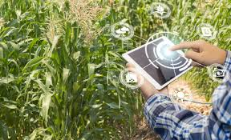

Nosso Objetivo
Ligação entre campo e cidade
A Demeter Biotech veio com o objetivo de introduzir a tecnologia no campo para uma melhora geral do mesmo
colocando um fim no debate entre campo e cidade, já que os mesmos não são opostos, mas sim complementares
por meio de sistemas de administração inteligentes, engenharia genética e tecnologia buscamos fortalecer ainda mais a relação campo-cidade